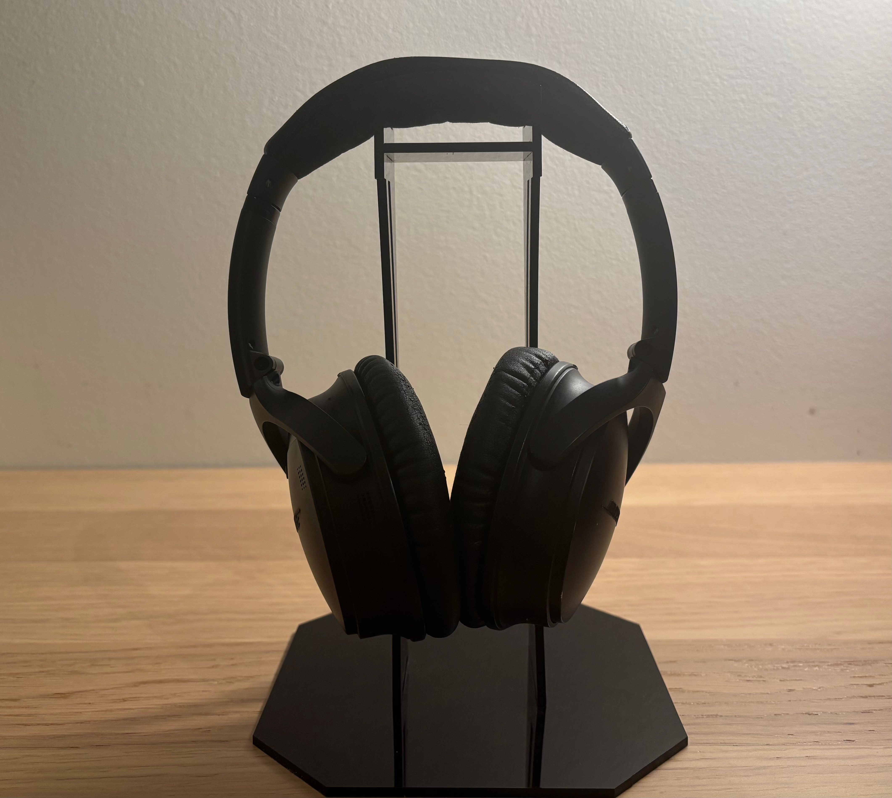
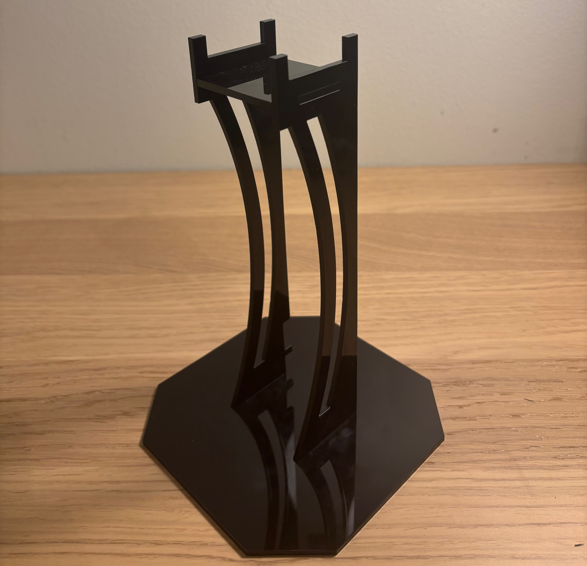
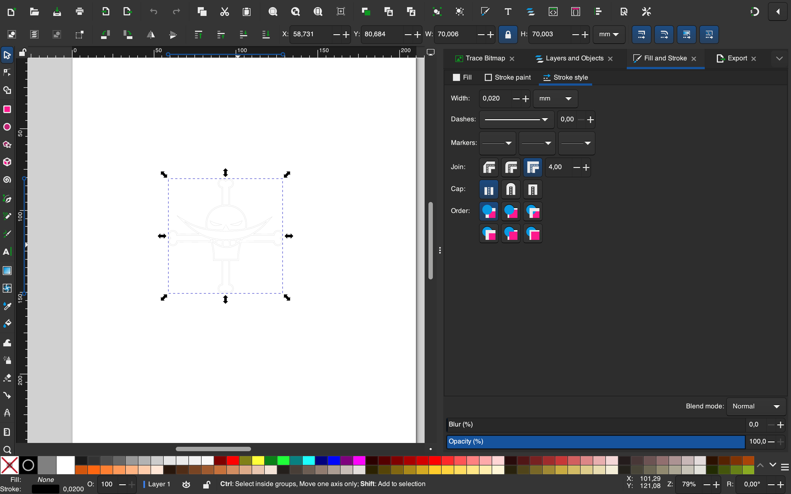
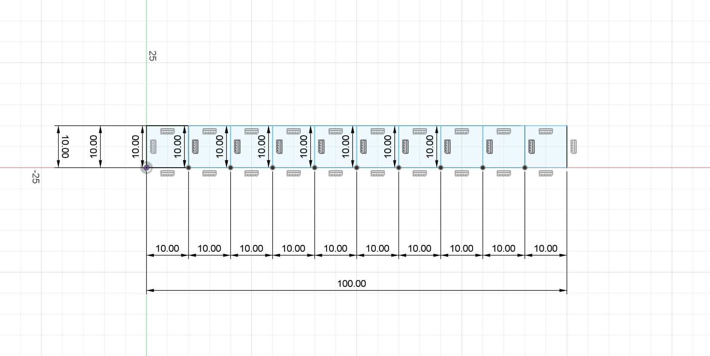
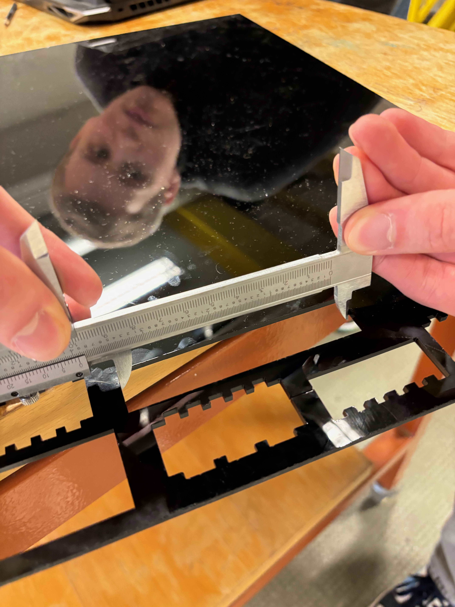
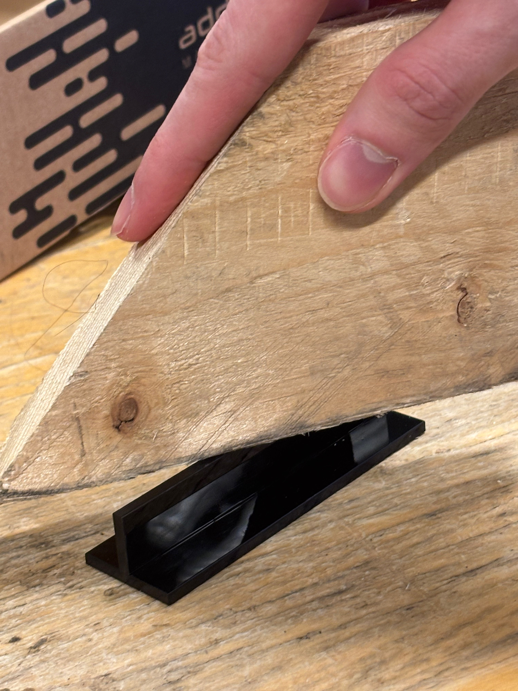
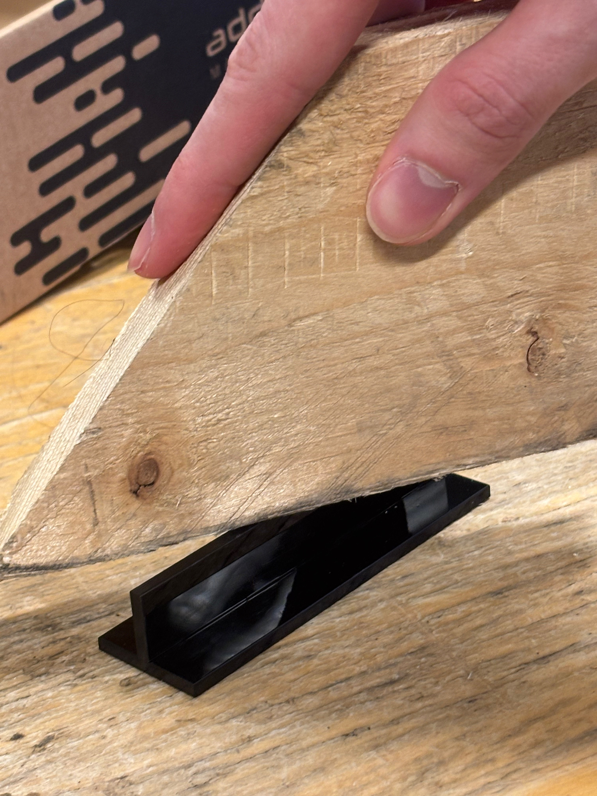

Verkefni 2
Parametrísk hönnun og tölvustuddur skurður.
Heyrnartólastandur
Lokaniðurstaða verkefnisins er heyrnartólastandur. Parametrískt þrívíddarmódel unnið í Fusion 360 og skorið út með laserskurðarvél í Vr3.  Undirbúningur verkefnis
Verkefnavinnan hófst á mikilvægri undirbúningsvinnu, í henni fólst m.a. að horfa á myndböndin sem tengjast verkefninu á youtube-rás áfangans, yfirlestur verkefnalýsingu, niðurhal nauðsynlegra umhverfa og annað slíkt fikt. Ákveðið var að notast við CAD forrit með meðmæli frá leiðbeinanda við þrívíddarhönnunina, Fusion360, til þess að hanna standinn. Myndvinnslan og undirbúningur fyrir vínyl- og laserskurð var unnin í Inkscape. Gagnabankinn sem varð fyrir valinu kallast Thangs og finna má hönnunarskjölin mín hér.
Vínylskurður

Markmið verkefnisins var að nota vínylskera til þess að búa til eith sniðugt. Vinna mátti með 100x50cm skurðarflöt, flestöll fyrri verkefni nýttu þó ekki plássið þar sem þau voru nærri því límmiðar til þess að setja á fartölvu. Mín tölva er helvíti litlaus svo ég hugsaði að slíkur límmiði myndi vonandi lífga upp á hana og væri því ekki slæm hugmynd. Val á því sem átti að skera út var fljótgert þar sem ég er staddur í miðju One Piece maraþoni. Nýbúinn að klára Marineford-arcið ákvað ég að skera út Whitebeard Pirates lógóið. Myndina mátti þá flytja inn í Inkscape. Skala þurfti hana til og ákveðið að hafa límmiðan 70x70mm stóran. Þar á eftir er opnað fill and stroke og stillt á no fill, flat color og 0,02mm línuþykkt. Þegar myndinni hafði verið exportað sem pdf var hún sett á usb kubb og leiðbeinandi stillti upp vínylskera og hann skorinn út. Þá var ekkert því til fyrirstöðu en að setja lokaniðurstöðu á tölvuna líkt og sést að ofan.
Kerf mælingar
Áður en hafist var handa við að hanna hlut til þess að laserskera þá var nauðsynlegt að framkvæma kerf mælingu. Ég ákvað að vinna með 3mm akríl og vann með Kalla og Helga við framkvæmd mælingarinnar. Kerfið er breiddin á lasergeislanum og skiptir miklu máli að þekkja hana þegar búa á til press fit módel. Fyrst skoðuðum við vefsíður fyrrum nemenda til þess að átta okkur á því hvernig framkvæma ætti mælinguna. Hún fór svona fram í eftirfarandi skrefum. Teiknaðir eru nokkrir kassar (í þessu tilfelli 10) af sömu stærð í Fusion 360, þeim er svo exportað yfir í Inkscape og gerðir tilbúnir til laserskurðar líkt og í vínylskurðarhluta verkefnisins. Þar á eftir má stilla laserskerann og setja af stað. Þegar kassarnir hafa verið skornir út eru þeir teknir og mældir allir saman í línu með skífmáli, einnig er gatið sem kassarnir skilja eftir sig mælt. Því næst er skoðaður stærðarmunur gatsins og kassanna og deilt með 11 þar sem laserinn sker 11 sinnum á milli kassanna. Niðurstöður kerf mælinga voru (10,022cm - 9,876cm)/11 = 0,01327cm = 0.1327mm.
 Geislaskurður
Nú þegar undirbúningsvinnan hefði verið unnin að mestu leiti var hægt að hefjast handa við meginhluta verkefnisins, að hanna paramertrískt pressfit módel. Fyrst og fremst þurfti að vera góð hugmynd til staðar og eftir gott brainstorm við skrifborðið heima fannst mér upplagt að smíða heyrnatólastand þar sem heyrnatólin mín liggja oftast bara einhversstaðar í herberginu. Eitt lauflétt gúgl skilaði þessari hönnun megin innblástri verkefnisins. Þá tók ég mælingar af heyrnatólunum mínum og rissaði upp í stílabók helstu málsetningar standsins og útlit. Eftir að hafa kynnt mér aðeins hvernig parametrísk hönnun í Fusion virkaði í gegnum hlekki á verkefnalýsingunni hófst teikning þrívíddarmódelsins. Ég ákvað fljótt að þar sem hluturinn væri tiltölulega einfaldur þá myndu parametrarnir mínir vera hæð, breidd, lengd og efnisþykkt. Því vann ég mikið með hlutföll af þeim stærðum til þess að staðsetja fingur, göt og aðra skurði. Botn og toppplatan heppnuðust ágætlega án mikilla vandræða en þegar ég var byrjaður að vinna með hringbogana hægðist talsvert á mér, hverjum hefði dottið í hug að staðsetja holu í hæðarbitunum ávallt eins væri erfitt. Smá þrautsegja og fikt með offset skipanina lagaði það þó að lokum. Speglunar fallið hjálpaði mér einnig talsvert við hönnun standsins. Parametra og áhrif breytinga á þeim er að finna hér á myndum.


Næstu skref voru að undirbúa fyrir laserskurð, þá hjálpuðu myndbönd í verkefnalýsingu ásamt þessu gæðamyndbandi um hvernig á að reikna með kerf í Fusion mikið. Fletja þarf út hönnunina með align fallinu og síðan í manufacture glugganum þarf að búa til skurðartólið og beita því á hlutinn, allt er þetta útskýrt vel á youtube. Loks er hægt að exporta sem dwg skrá, færa yfir í Inkscape og svo skurðarvélina sem svg skrá. Skurðarferlið sjálft tekur ekki nema örfáar mínútur og út koma partar sem ætti að vera hægt að smella saman. Áður en módelið er skorið út þarf þó að gera prufu. Farið er í gegnum skrefin að ofan og lítil prufa með fingrum og götum gerð til þess að sjá hvort partarnir smelli ekki saman. Prufuna má sjá hér að neðan.
 

Prufan small vel saman, aðeins þétt, en lítið sem þurfti að hafa áhyggjur af. Nú ætti að vera hægt að skera út fullmótaðan heyrnatólastand, hins vegar þegar skurði var lokið og komið að því að smella honum saman þá pössuðu sum göt fullkomlega, önnur örlítið laus og enn önnur bara alls ekki. Leysa mátti vandamálið með þjöl standurinn því tilbúinn, sjá myndir efst á síðu.